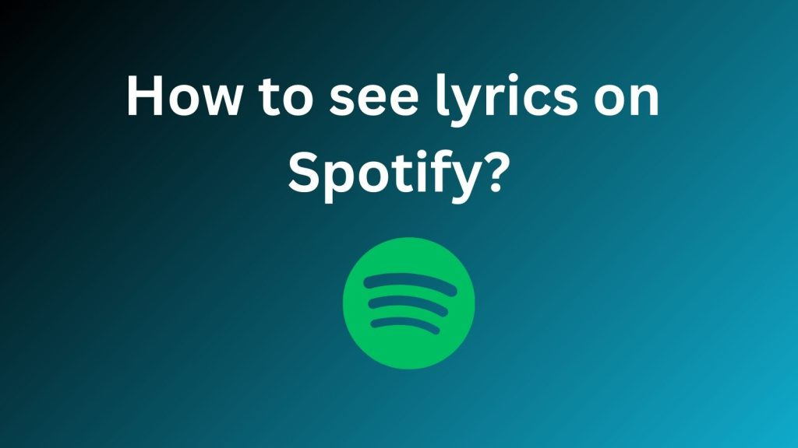

If you're a music lover and Spotify user, you might have noticed something new popping up on your screen lately—lyrics! Yes, that’s right! Now you can sing along to your favorite songs without having to Google the lyrics or rely on your own questionable memory. So, let's dive into the world of lyrics on Spotify and explore why this feature is a game-changer for music fans everywhere.
The Rise of Lyrics on Spotify
Spotify’s lyrics feature, introduced in 2020, has transformed how we experience music. Gone are the days of mumbling through a song's verses and pretending you know the words. With this feature, you can follow along with the lyrics in real time, making your sing-along sessions more accurate and a lot more fun. It's like having your very own karaoke machine, minus the stage fright!
How to Access Lyrics on Spotify
- Open Spotify: Launch the app on your phone or desktop.
- Play a Song: Choose a track you want to listen to.
- Tap on the Now Playing Bar: This is the bar at the bottom of the screen on mobile or the top of the screen on desktop.
- Scroll Down: On mobile, scroll down to find the lyrics. On desktop, you’ll see them in the right panel.
And voilà! The lyrics should be displayed in sync with the music, so you can sing along without missing a beat.
Why Lyrics on Spotify Are a Game-Changer
- Perfect Your Karaoke Skills: Whether you’re preparing for a solo performance or just singing in the shower, having the lyrics in front of you helps you nail those high notes and tricky verses. Your bathroom acoustics might not be the best, but at least your lyrics will be spot-on.
- Understand the Song Better: Sometimes, lyrics can be a bit garbled or unclear. With the lyrics feature, you can finally understand what the singer is actually saying. No more guessing if they’re singing "Dancing Queen" or "Dancing Queen Bee." Spoiler alert: It’s the former.
- Learn New Languages: Many songs are in languages other than your native one. With lyrics in sync, you can understand and learn new words. It’s like a mini language lesson wrapped in your favorite tunes.
- Improve Your Singing: For those who want to improve their singing skills, following along with the lyrics can help with pronunciation and timing. You might not become the next Beyoncé, but you’ll at least sound like you know what you’re doing.
Lyrics Features You Didn’t Know You Needed
- Sing-Along Mode: On mobile, you can swipe up on the lyrics screen to access Sing-Along Mode. This highlights the lyrics in real-time, so you don’t get lost during a song’s bridge.
- Background Color: Spotify sometimes changes the background color of the lyrics to match the mood of the song. It’s a small touch but adds to the overall experience. If you’re listening to a moody ballad, expect some dim lighting in the lyrics area.
- Multi-Language Support: Spotify provides lyrics in multiple languages for many tracks. If you’re listening to a Spanish song, you might get the lyrics in Spanish, English, or both.
Tips for Using Lyrics on Spotify
- Explore Lyrics for New Songs: When discovering new music, use the lyrics feature to get a better sense of the song’s theme and meaning. It’s like having a personal guide to the song’s story.
- Use Lyrics for Study: If you’re a musician or songwriter, analyzing lyrics on Spotify can help you understand different lyrical styles and techniques. It’s a great way to get inspiration or learn from the pros.
- Share Your Favorites: If you come across a particularly catchy or profound lyric, share it with friends. Spotify makes it easy to share tracks, and you can include the lyrics in your message.
- Customize Your Experience: If you’re into customization, you can adjust your lyrics display settings. Choose from different font sizes and themes to make the lyrics easier to read.
The Future of Lyrics on Spotify
Spotify is continually working on improving its features, and lyrics are no exception. Expect more interactive features, better accuracy, and possibly even more integration with other aspects of the app. Who knows? In the future, you might have lyrics that change color based on your mood or a feature that lets you add your own lyrics to tracks.
Spotify Premium for PC
It’s been a long day, your favorite snacks are waiting by your side, and you’re ready to unwind with the music that speaks to your soul. But hold on—ads keep popping up, disrupting the vibe. Not to mention, you can’t even skip that one song that makes you wonder why it’s even on your playlist. This is where Spotify PC Download swoops in like a superhero, offering an ad-free, smooth music experience that feels tailor-made just for you. If you’re considering upgrading your Spotify experience on your PC, let’s explore the benefits that make it worth every cent (with a dash of humor, of course).